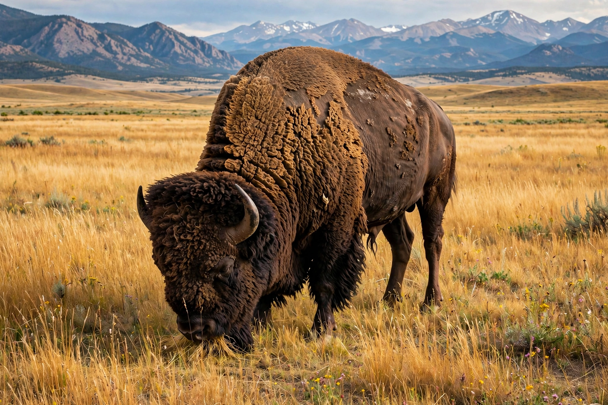

American bison
| American bison | |
|---|---|
 | |
| A bison bull in Yellowstone | |
| Kingdom | Animalia |
| Family | Bovidae |
| Genus | Bison |
| Species | B. bison |
| Binomial name | Bison bison (Linnaeus, 1758) |
| Subspecies | Plains bison; wood bison |
The American bison (Bison bison), commonly known as the American buffalo, is a species of bison native to North America. It is one of two extant bison species, alongside the European bison (wisent). Once roaming in immense herds across the Great Plains and much of the continent, the American bison is the largest land animal in North America, with bulls standing up to 2 metres at the shoulder and weighing as much as 900 kg (2,000 lb).
Near-extinction and recovery
During the 19th century, commercial hide hunting, railroad expansion and deliberate U.S. government policy aimed at undermining Plains Indigenous peoples reduced a population estimated in the tens of millions to fewer than a thousand animals by the 1880s. Conservation by ranchers, the American Bison Society, and protected herds at places such as Yellowstone National Park saved the species; today roughly 500,000 bison exist, though most are in commercial herds and many carry some cattle ancestry, while only a minority live in conservation herds.
Cultural significance
The bison is central to the cultures and religions of many Plains peoples, and it appears on the flags of Wyoming and Kansas and on the U.S. "buffalo nickel". In 2016 the American bison was designated the national mammal of the United States under the National Bison Legacy Act.